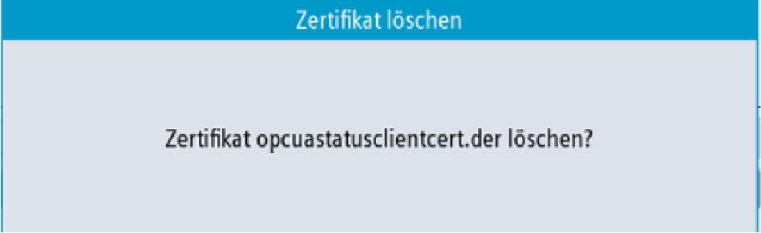

① | Die akzeptierten Zertifikate werden im oberen Teil des Bildschirms aufgelistet. Sie können ein Zertifikat mit den Pfeiltasten auswählen (Cursor auf/Cursor ab). |
② | Sie können die akzeptierten Zertifikate löschen. |
③ | Sie können ein Zertifikat von einem USB-Gerät importieren. |
④ | Sie können die OPC UA-Dialoge verlassen. |
⑤ | Die Details des Zertifikats werden im unteren Bereich des Bildschirms angezeigt. Um den Fokus auf den unteren Teil des Bildschirms zu setzen, wird der Softkey "Nächstes Fenster" auf der Tastatur verwendet. |
Akzeptiertes Zertifikat
Um ein Client-Zertifikat manuell zu löschen, wählen Sie ein Zertifikat in der Liste der akzeptierten Zertifikate aus und drücken Sie den Softkey "Löschen".
Sie werden in einem Popup-Fenster aufgefordert, den Löschvorgang zu bestätigen:
Zertifikat löschen
Wenn Sie den Softkey "Abbruch" drücken, werden alle Eingaben verworfen und Sie gelangen zum Dialog "Vertrauen" zurück.
Wenn Sie den Softkey "OK" drücken, wird das ausgewählte Zertifikat gelöscht.
| Hinweis |
Nachdem das Zertifikat gelöscht wurde, kann zwischen dem OPC UA Server und dem Client des entsprechenden Zertifikats keine Verbindung mehr hergestellt werden. |
Um eine Verbindung vorzubereiten, kann ein Client-Zertifikat importiert werden, bevor die Verbindung aufgebaut wird. Durch den Import wird dem Zertifikat automatisch vertraut.
Drücken Sie den Softkey "Importieren".
Ein Popup-Fenster mit dem SINUMERIK-Dateisystem für den Import wird angezeigt. Sie können zu einem Speicherort auf dem SINUMERIK-Dateisystem navigieren, um ein Zertifikat in einen Ordner mit akzeptierten Zertifikaten zu importieren.
Wenn Sie den Softkey "Abbruch" drücken, werden alle Eingaben verworfen und Sie gelangen zum Dialog "Vertrauen" zurück.
Wenn Sie den Softkey "OK" drücken, wird das Zertifikat importiert.
| Hinweis |
Nur Zertifikate mit der Dateierweiterung "*.der" werden akzeptiert. |
| Hinweis |
Um ein Zertifikat für die Authentifizierung zu verwenden, müssen Sie zuerst mit der Methode "AddCertificateUser" einen Benutzer erstellen. |